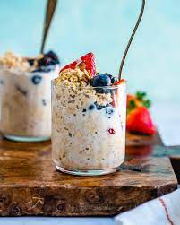

Overnight Oats

This is a recipe for overnight oats. I love overnight oats.
Ingredient List:
- banana
- oats
- almond butter
- chia seeds
- almond milk
- maple syrup
- vanilla extract
- salt
Steps:
- PLace sliced banana in the bottom of jar and layer almond butter, chia seeds, and oats
- mix almond milk, maple syrup, and vanilla extract and pour over oats
- cover and refrigerate overnight